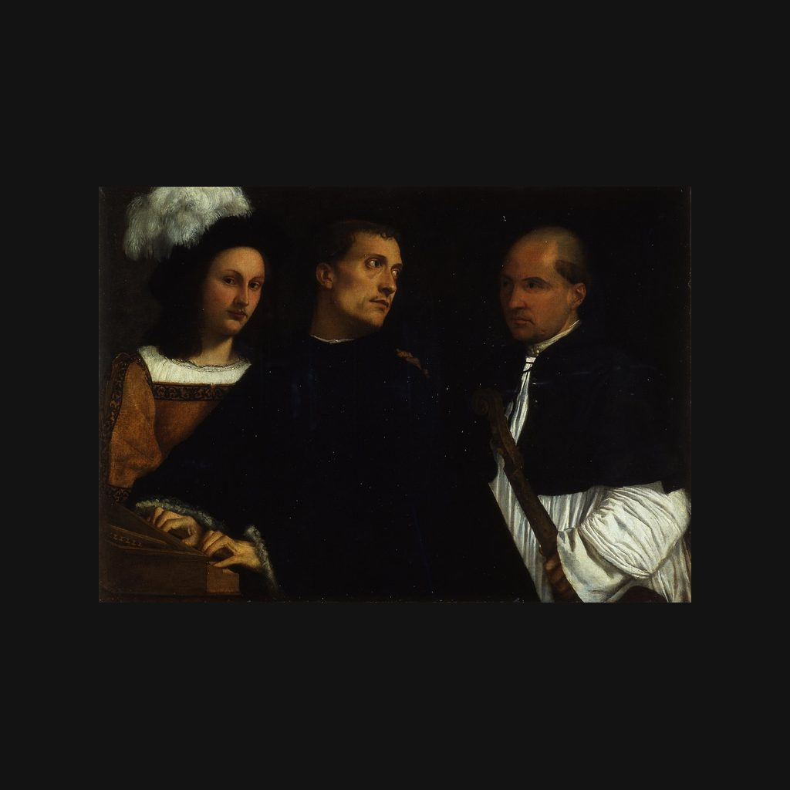

音乐会
提香 · 1510—1511年
Il Concerto
讲解节选
三个男人，挤在一张画里。中间那位穿深蓝色镶毛皮外衣的，手还放在键盘上，却回过头去，因为右边拿着维奥尔琴的人，正把手搭在他肩上。左边那个戴羽饰帽的青年，没有和另两人对望，而是望着画外的你。
这幅画叫《音乐会》，也叫《被打断的音乐会》，作者是威尼斯画家提香，大约画于一五一零到一五一一年，布面油画，宽一米多。提香是十六世纪威尼斯绘画的核心人物，肖像、宗教画、神话画都有重要成就。画这幅画的时候，他还很年轻，深受画家乔尔乔内的影响。这幅画到底出自谁的手，在乔尔乔内、提香和其他人之间争论了很久；一八八零年，莫雷利提出是提香，如今乌菲齐美术馆采用的，就是青年提香的说法。
— 普通话讲稿 · Artvery
完整讲解约 3 分钟，在 Artvery App 里收听。粤语、台湾国语、内地普通话三种语音，馆内对准作品即可识别播放。
即将上架 App Store
App 即将上架，敬请期待。上架后免费下载，每座博物馆单独购买，一次购买永久使用。
作品信息
- 作者
- 提香
- 年代
- 1510—1511年
- 尺寸
- 86.5 × 123.5 厘米
- 所在
- 皮蒂宫 · 帕拉蒂纳画廊与行星厅